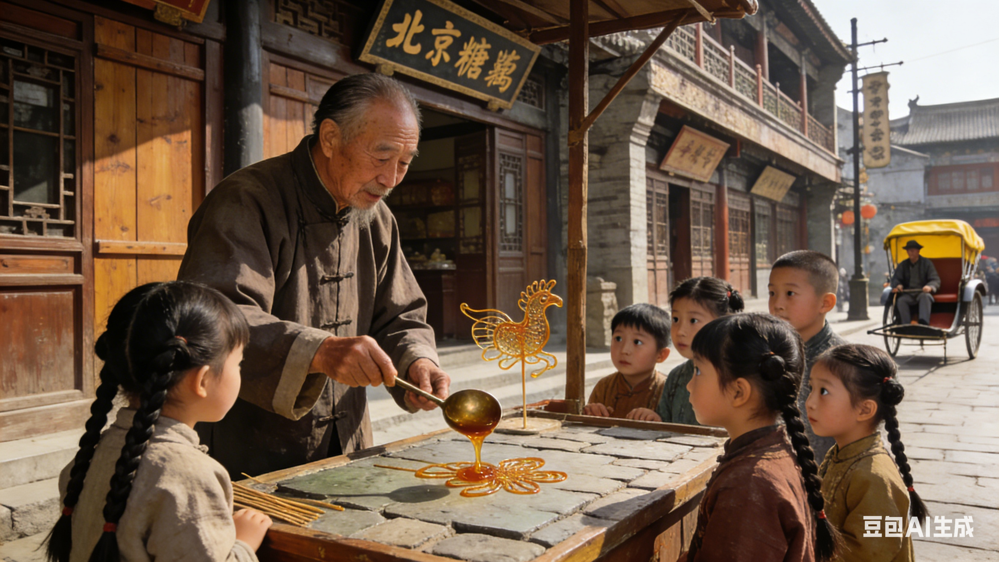
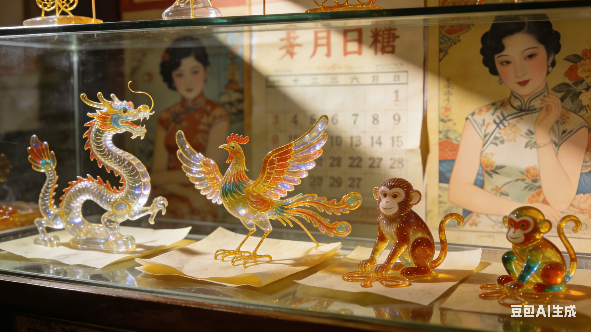
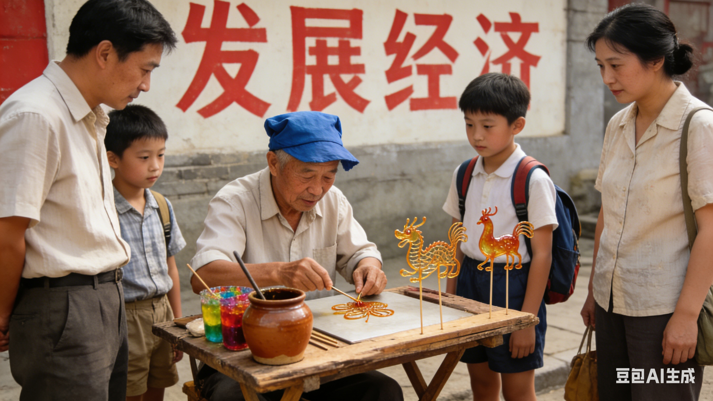

非遗糖画数字传承馆
糖画艺术起源于明代，历经六百余年发展，从民间街头技艺演变为国家级非物质文化遗产
糖画最早出现在四川地区，最初被称为"糖灯影"或"糖关刀"。明代《蜀中广记》中已有关于糖画的记载，当时主要用于祭祀和节庆活动。
最初的糖画图案较为简单，以动物和吉祥符号为主，制作工具也相对简陋。
清代是糖画艺术的重要发展时期，随着蔗糖生产的普及，糖画技艺逐渐传播到全国各地。
这一时期出现了专业的糖画艺人，技艺更加精湛，图案更加丰富，出现了十二生肖、神话人物等复杂图案。
糖画成为庙会、集市上的常见民间艺术，深受儿童喜爱。艺人们走街串巷，靠手艺谋生。
这一时期形成了糖画的多种地域流派，如四川糖画、北京糖画、山东糖画等，各具特色。
改革开放后，传统民间艺术重新受到重视。糖画作为中国特色民间艺术，开始出现在各种文化交流活动中。
1986年，糖画被列入四川省非物质文化遗产名录，标志着这一艺术形式正式受到官方保护。
糖画被正式列入第二批国家级非物质文化遗产名录，编号为Ⅶ-95。
这一认定极大地推动了糖画艺术的保护、传承和发展，各地开始建立糖画传承基地和保护机构。
糖画艺术在保留传统技艺的基础上，不断进行创新。现代糖画作品题材更加广泛，技艺更加精湛。
数字技术的应用为糖画传承开辟了新途径，通过网站、社交媒体等方式，让更多人了解和喜爱这一传统艺术。
通过历史图片，了解糖画艺术的演变历程

这张老照片记录了20世纪初糖画艺人在街头作画的情景，展示了传统的糖画工具和制作场景。

这个时期的糖画作品以动物和简单人物为主，线条简洁明快，色彩以琥珀色为主。

80年代糖画艺术重新繁荣，作品题材更加丰富，开始出现大型糖画作品。